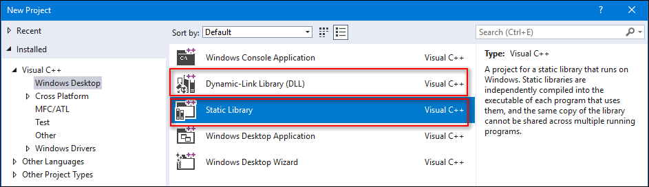
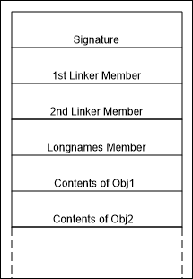
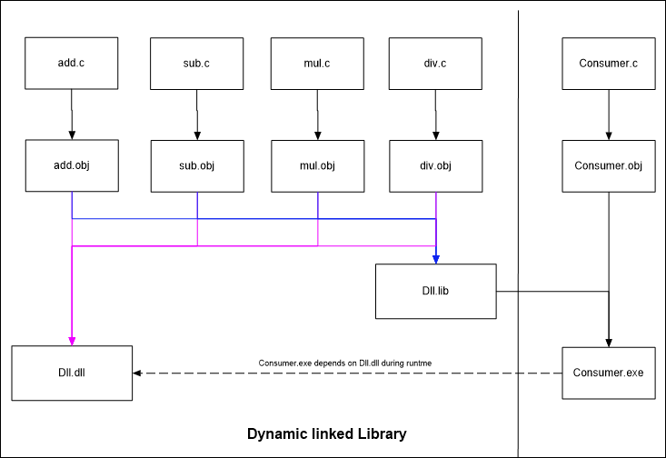
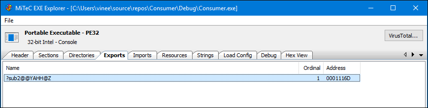

Introduction
During the compilation one of the crucial step after assembling is creating the Object files. The collection of these object files is called a lib file. We can create these .lib files through following visual studio project types
- Static Library
- Dynamic Linked Library
The format of these .lib files is specified in ‘Archive (Library) File Format.’ section of PE Format. As per the spec, .lib is an archive of individual .obj files with some metadata. Multiple tools can be used to extract lib files. Visual Studio installation contains Lib.exe tool. Since .lib and .obj files follow Unix COFF format Unix binutil’s ‘ar’ tool can be used to extract it.
Lib StaticLib1.lib /list Lib StaticLib1.lib /EXTRACT:Debug\sub.obj /out:sub.obj <– Extracts one file at a time! or ar -x StaticLib1.lib or use 7-Zip to extract it
 Visual Studio New Project dialog for ‘Static Library’ and ‘Dynamic Linked Library’
Static Library
Static Library is created when you want to provide the complete code to link into another dll or exe. For example, If a static library project contains 4 files add.c,sub.c,mul.c,div.c containing functions for their operations like below respectively.
int add(int a)
{
return a + 1;
}
When you build the project what we get is a .lib file containing obj files of each of the above .c file. So a static library contains all the code that gets compiled from your project, and this .lib will be consumed by any other project types(dll or exe).
NOTE: The functions inside a Static Library is not declared with __declspec(dllexport) because all functions declared in a static library are meant to be consumed/included by others directly.
dumpbin /exports StaticLib.lib <– shows nothing because .lib itself does not export anything dumpbin /symbols StaticLib.lib <– shows all the symbols present
 Workflow for Static Library creation and consumption
Workflow for Static Library creation and consumption
 Concluded based on HxD view of the file
Dynamic Linked Library
Dynamic Linked Library(DLL) is in many ways similar to Static Library because it also provides the code to be used by other projects like dll or exe, but the difference is in the way the code gets re-used by consumers. In DLL, the outcome of the project is not only a .lib file but also a .dll file. In fact, in case of DLL project, the .lib file does not contain any .obj file instead it contains only pointers of exported functions to the dll containing the actual code. In a Dll, all of the code is indeed present inside the .dll file.
Since .lib does not contain any real .obj unlike static lib, we can only see the exported symbols but not their code in case of dll’s .lib file.
__declspec(dllexport) int add(int a)
{
return a + 1;
}
dumpbin /exports Dll1.lib <– shows all the exported functions
 Workflow for Dynamic Linked Library creation and consumption
 Concluded based on HxD view of the file
Concluded based on HxD view of the file
NOTE: The functions inside a Dynamic Linked Library need to be declared with __declspec(dllexport) if they have to be visible and consumed by others(indirectly).
Static Library with __declspec(dllexport)
This is interesting. When a function inside a static library is declared with __declspec(dllexport), like any other function, it gets included by the consumer in his binary(dll) but because it is declared as __declspec(dllexport) that function gets exported as well from the consumer binary! Below is a screenshot of Consumer.exe which is exporting sub2 function because sub2 is actually declared with __declspec(dllexport) in the original static library.
 sub2 function got exported from the final consumer binary
The takeaway here is Static Libraries are just a convenient archive format to hold multiple .obj files nothing more or nothing less! So we should be cautious of how the functions are declared.